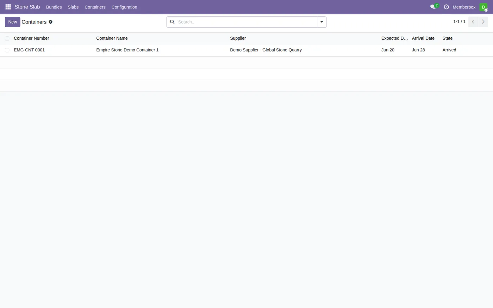

อัปเดตล่าสุด: 25 ตุลาคม 2569 · ตรวจกับระบบ stone_slab_inventory 19.0.2.109.37 · เขียนใหม่ให้ตรงกับการรับ Block ผ่านใบรับของ (ADR-084) รายละเอียดเต็มและภาพหน้าจอรอบล่าสุดอยู่ที่ บทที่ 30: Block
เปลี่ยนจากเดิม ไม่ต้องสร้าง Block ด้วยมืออีกแล้ว และใบรับของไม่ถูกบล็อก
ฉบับก่อนหน้า (ก่อน ADR-084) สอนให้เข้า Stone Slab → Blocks → New กรอก Total CBM และ Thickness เอง แยก PO เป็นหนึ่งบรรทัดต่อก้อน และบอกว่าระบบบล็อกการ Validate ใบรับของ ตอนนี้ทำงานกลับกัน: กด Validate ใบรับของ แล้ว Block เกิดให้เอง ขนาดกรอกที่ใบรับของ (กว้าง × ยาว × สูง) Block ไม่มีความหนา (ความหนาตัดสินใจที่ Slab) และหน่วยซื้อขายคือ ตัน
หมายเหตุ หน้านี้พูดถึงการซื้อหิน เท่านั้น
ถ้าซื้อของอย่างอื่นที่ไม่ใช่หิน (อุปกรณ์ วัสดุสิ้นเปลือง บริการ ฯลฯ) ใช้ขั้นตอน Purchase มาตรฐานของ Odoo ได้เลย ศัพท์ "Block" ในระบบ เดิมชื่อ "Bundle" (model เบื้องหลังยังชื่อ stone.bundle)
ซื้อและรับ Block เข้าคลัง
1 Purchase → New เลือกผู้ขาย Add a product เลือกสินค้า Block ของหินชนิดนั้น ใส่จำนวน (ปริมาตรโดยประมาณ) และราคา ช่อง Qty (Ton) แสดงตันที่คำนวณให้ ยังไม่ต้องรู้ขนาดจริง
2 Confirm Order ระบบสร้างใบรับของให้ มีแถบสีฟ้าบอกว่าเป็น "รับ Block"
3 เปิดใบรับของ กด Details ที่แถวสินค้า 1 แถว = 1 ก้อนจริง กรอก ยาว / กว้าง / สูง (เมตร) ของแต่ละก้อน มีหลายก้อนกด Add a line เพิ่มแถวทีละก้อน (ใบสั่งซื้อบรรทัดเดียวรับได้หลายก้อน ไม่ต้องแยกบรรทัดต่อก้อนแล้ว)
4 ถ้ามีน้ำหนักชั่งจริงตามใบส่งของ ใส่ที่ช่อง ตันตามใบส่งของ (เว้นว่างได้) ช่อง Quantity คำนวณจากขนาดให้เองและพิมพ์ทับไม่ได้
5 กด Validate ระบบตั้งเลข Lot ให้ ย้ายของเข้า Stone Available คิดมูลค่าตามราคา PO และสร้างเอกสาร Block พร้อมขนาด ผู้ขาย และ PO ที่มา ถ้าขนาดไม่ครบ 3 ช่อง ระบบไม่ให้ Validate
ดู Block ที่ Stone Slab → Blocks (การ์ดสรุปขนาด คงเหลือ ราคาขาย และต้นทุน) ถ้าวัดขนาดผิด แก้ได้ด้วยปุ่ม "แก้ขนาด" (เฉพาะ Inventory Manager และต้องใส่เหตุผล) และถ้าต้องคืนผู้ขายใช้ใบรับคืนมาตรฐาน ดู บทที่ 30 หัวข้อ 4.3–4.7
ซื้อแผ่น (Slab) สำเร็จรูป
ใช้ใบสั่งซื้อกับใบรับของเหมือนกัน แต่กรอกขนาดจริงทีละแผ่นที่ใบรับของ ระบบตั้งเลข Serial ให้ ดู บทที่ 31 หัวข้อ 4.3–4.4
ใบแจ้งหนี้ผู้ขาย
Accounting → Vendors → Bills → New เลือกผู้ขายแล้วเลือกใบสั่งซื้อ ระบบดึงรายการตามที่รับจริงและเขียนเป็นตัน ในราคาบาทต่อตันตามใบสั่งซื้อ ถ้ากรอกตันตามใบส่งของไว้ตอนรับของ ยอดบิลจะตรงกับใบส่งของของผู้ขาย (บทที่ 30 หัวข้อ 4.4)
Container (ถ้ามีหลาย Block มาด้วยกัน 1 ตู้)
เมนู Stone Slab → Containers ใช้จัดกลุ่ม Block ที่มาด้วยกัน 1 container/shipment เดียวกัน ใช้กระจาย Landed Cost ตามสัดส่วนปริมาตรของแต่ละ Block (ดู บทที่ 33: Landed Cost และ บทที่ 07: ต้นทุนสินค้า ) Total Weight (Ton) รวมน้ำหนักของทุก Block ในตู้ให้อัตโนมัติ ใช้อ้างอิงตอนคุยค่า freight/ศุลกากรเท่านั้น ไม่เกี่ยวกับการกระจาย Landed Cost
